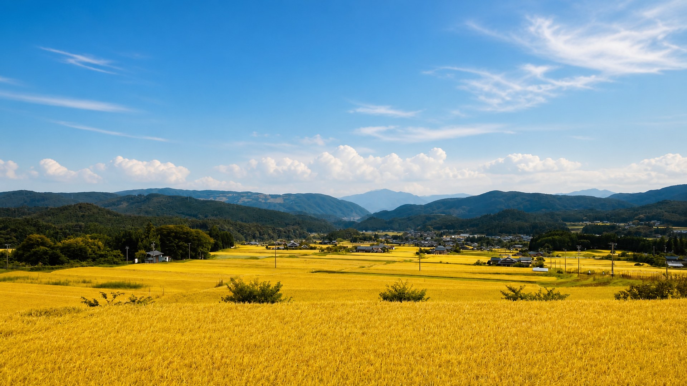
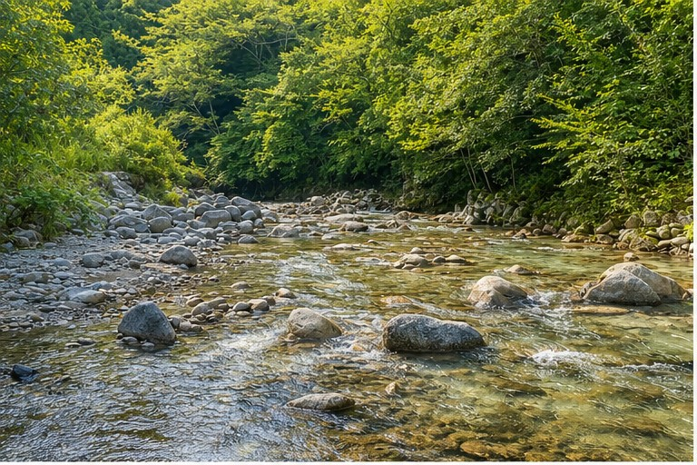
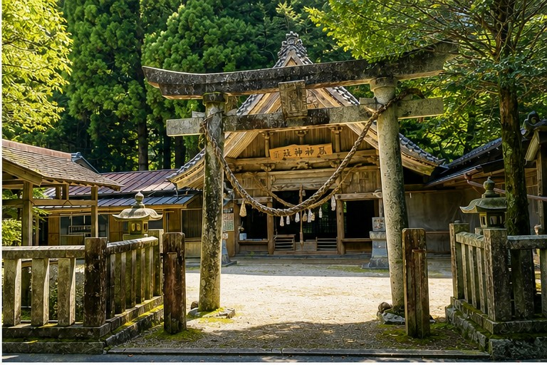
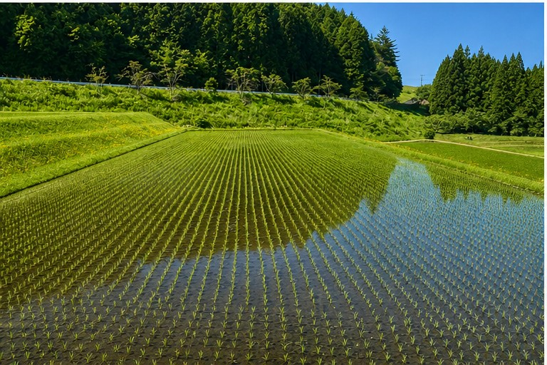
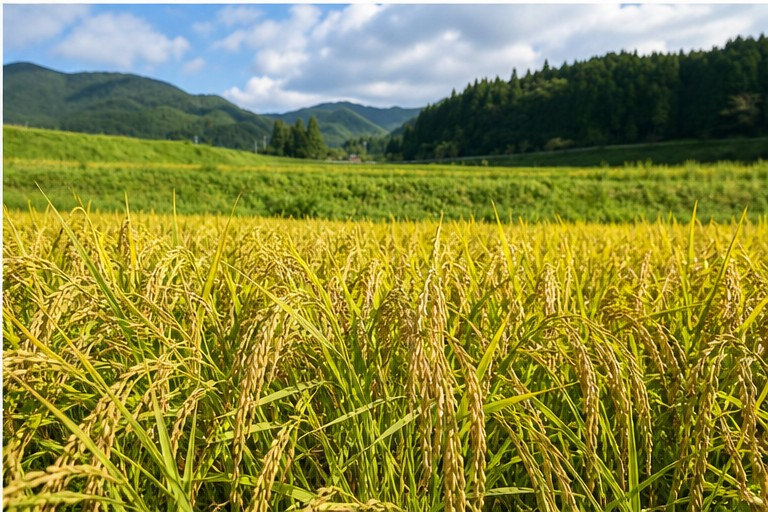

希望数量を確認
10kg単位で希望数量をお知らせください

玄米10kgから予約可能 配送先と数量を確認後、送料込みの合計金額をご案内します
山あいの小さな田んぼを守るため、770円/kg 税込でご案内しています
10kgごとに1,000円を目安に、支払い前に合計金額をお知らせします
フォーム送信後、合計金額をご確認いただいてから確定します
必要な分だけ精米でき、保管や使い分けがしやすい形です
予約前の確認
価格、数量、支払い時期、発送時期を事前に整理 安さではなく、育つ場所と続ける意味に納得して選べます
予約方式
収穫後は乾燥、調整、袋詰め、保管、発送準備へ進みます 事前に希望数量を伺い、準備が整い次第順番にご案内します
フォーム送信だけで購入確定にはなりません 送料込みの金額をご確認いただき、銀行振込の確認後に予約確定となります
10kg単位で希望数量をお知らせください
配送先と数量を確認し、送料込みの金額をお伝えします
内容に納得いただいた後、銀行振込の確認をもって予約確定です
米づくり
毎日のごはんだからこそ、産地や作り方が分かるものを選びたい方へ 阿木ファームが育てた玄米を、収穫後に順次お届けします
稲の育ち、水の入り方、田んぼの状態を見ながら育てています
白米、分づき米、玄米食まで、暮らしに合わせて使い分けできます
必要な量を確認しながら、収穫後に順番にご案内します
産地が分かるお米を選びたい方、玄米で保管して必要な分だけ精米したい方に向いています
栽培について
阿木川上流域は、山あいの水と昼夜の寒暖差がある地域です 川の最上流に近い水、澄んだ空気、山間地ならではの気候の中で育てています
平地の大きな田んぼで効率よく作るお米とは違い、阿木の田んぼは一枚一枚が小さく手間もかかります それでも、この環境と地域の農業を残したいという思いで続けています
安さで選ぶお米ではありません どこで、どんな環境で、誰が育てたお米を食べるかを大切にする方へお届けします
玄米でお届けするため、ご家庭やお近くの精米所で白米・分づき米・玄米食などに調整できます 食べる分だけ精米したい方にも使いやすい形です
地域の写真
岐阜県中津川市阿木 水、田植え、実り、田んぼのまわりの様子を掲載しています

Water
阿木川上流域の水を使い、稲の状態を見ながら水管理をしています

Local
田んぼの近くにある地域の風景です 阿木という土地の雰囲気を伝えるために掲載しています

Growing
苗が並ぶ田んぼは、米づくりの始まり 広めの間隔で、風通しと日当たりを大切にします

Harvest
収穫前の田んぼの様子です 9月中旬から下旬ごろの収穫を予定しています
育つ場所
阿木川上流域の水、澄んだ空気、山あいの寒暖差 大きな効率ではなく、小さな田んぼを守る米づくり 毎日のごはんとして食べやすいコシヒカリを目指しています
水源に近い田んぼで、阿木川の最上流に近い水を使っています 米づくりの一番の土台です
昼はしっかり日を浴び、夜は気温が下がる環境 小さな田んぼに手をかけながら育てています
水はけと保水性のバランスが取れた土地で、稲の根が健やかに育つよう管理しています
田植え前から苗の状態を見て、無理なく根を張れる準備をします
阿木川上流の水を生かし、稲の状態に合わせて田んぼを見回ります
実りを見ながら、9月中旬から下旬ごろの収穫を予定しています
玄米のままお届けすることで、家庭で必要な分だけ精米できます
味わい
最上流に近い水、昼夜の寒暖差、守りたい小さな田んぼ コシヒカリらしい甘みと粘りがあり 普段の食卓に使いやすいお米です
ふっくら炊いた時に、コシヒカリらしい甘みと粘りを感じやすいお米です
おにぎりやお弁当にも使いやすく、毎日の食卓で出番を作りやすい味わいです
玄米で保管し、白米・分づき米・玄米食まで家族の好みに合わせられます
食べ方
特別な道具がなくても、家庭の炊飯器で楽しめるお米を目指しています 玄米で受け取った後は、白米・分づき米・玄米食まで 食べ方に合わせて調整できます
食べる分だけ精米すれば、香りと甘みを感じやすい状態で炊けます お弁当やおにぎりにも使いやすい食べ方です
玄米食にする場合は、炊飯器の玄米モードや長めの浸水がおすすめです 噛むほど甘みを感じやすくなります
研ぎ始めの水はお米が吸いやすいので、可能なら浄水を使うと炊き上がりの印象が整いやすくなります
商品
10kgから予約できます 30kg、60kg、120kgなど、ご家庭の消費量に合わせてお選びください
まず試す
少量から試したい方、保管場所を抑えたい方に
7,700円 税込
送料目安 1,000円
合計目安 8,700円
おすすめ
ご家庭用として選びやすい数量です
23,100円 税込
送料目安 3,000円
合計目安 26,100円
まとめ予約
年間分の確保や、複数家庭での共同予約に
92,400円 税込
送料目安 12,000円
合計目安 104,400円
表示価格は税込・送料別です 安さではなく、阿木の山あいの田んぼを守るための価格として設定しています 送料目安は10kgごとに1,000円です
お届け
玄米はまとめて確保しやすい一方で、保管場所や分け方に悩むことがあります ご家庭の食べるペース、保管場所、親戚との分け方まで相談しながら決められます
10kg、30kg、60kg、120kgなど、必要な量に合わせて予約できます
ご家族や親戚で分ける場合も、受け取りや分配方法を事前に相談できます
玄米で保管し、必要な分だけ精米 白米で長く置くより風味を保ちやすくなります
気に入った方には、次の予約時期や収穫案内をお知らせできる形に整えていきます
予約の流れ
送信した瞬間に購入確定ではありません 合計金額を確認してから、予約するかどうかを決められます
10kg、30kg、120kg、または10kg単位の希望量を選びます
10kgごとに1,000円を送料目安として、送料込みの合計金額をご案内します
内容に納得いただいた後、銀行振込の確認をもって予約確定となります
9月中旬から下旬ごろに収穫し、10月中旬以降に順次お届け予定です
購入前の確認
はじめての方でも判断しやすいように、入金前に確認できる項目をまとめています 価格の理由に納得してから、予約するかどうかを決められます
表示価格は税込・送料別です 阿木の小さな田んぼを守るための価格です
配送条件を確認して正式金額をご案内します 北海道、沖縄、離島は別途確認します
フォーム送信だけでは確定しません 合計金額を確認してから判断できます
入金後は数量を確保するため原則キャンセル不可です 事情がある場合は早めにご相談ください
破損、誤配送、内容違いがある場合は 写真を添えてご連絡ください
商品表示
ラベルに記載する正式情報は、収穫後の調整時期と販売者情報を確認して最終表示します 産地、品種、産年は証明内容に基づいて表示します
予約フォームでいただいたお名前、電話番号、メールアドレス、発送先住所は 予約内容の確認、配送、問い合わせ対応のために使用します 公開前にフォームの通知先と保存期間を確認し、不要な情報は長く残さない運用にします
予約相談
数量、配送先、希望時期を送ってください 送料込みの合計目安を見てから、入金するかどうかを決められます
確認事項
はい 770円/kgの税込表示です 安さではなく、阿木の山あいの小さな田んぼと地域の米づくりを守るための価格として設定しています 送料目安は10kgごとに1,000円です
山間地の小さな田んぼで育つお米を、必要としてくださる方へ確実に届けるためです 収穫前に数量を確認することで、地域の米づくりを続ける支えにもなります 送信だけで購入確定にはなりません
9月中旬から下旬ごろを予定しています 天候や生育状況により前後する場合があります
10月中旬から下旬ごろを予定しています 収穫後、準備が整い次第順番にご案内します
お支払いは銀行振込のみです 振込先は予約内容の確認後にご案内します
事前予約後、8月末までのお支払いをお願いします お支払い確認後、予約確定となります
送料目安は10kgごとに1,000円です 北海道、沖縄、離島などは配送条件を確認して、入金前に合計金額をお知らせします
玄米10kgから予約できます 10kg単位で、30kg・120kgなど必要な量をご相談ください
はい 玄米でお渡しします ご家庭やお近くの精米所で、お好みの精米具合に調整できます
入金前は見送り可能です 入金後は数量を確保するため原則としてキャンセル不可です 事情がある場合は早めにご相談ください
破損、誤配送、内容違いがある場合は、到着後7日以内に写真を添えてご連絡ください 内容を確認して個別に対応します
直射日光、高温多湿を避け、風通しのよい涼しい場所で保管してください 長期保管の場合は小分けにして低温での保管がおすすめです